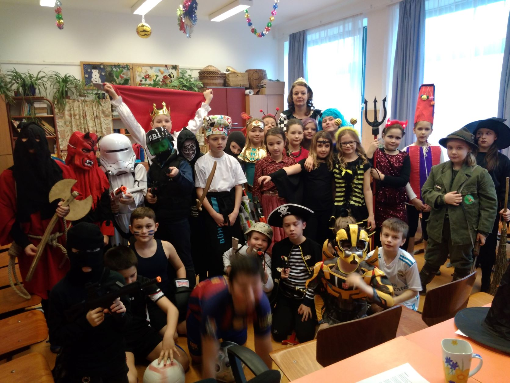

Nekem kevés jó tanár jutott, fájóan kevés. Amikor Alizée először iskolába ment, azt hittem belehalok, hogy újra be kell tegyem a lábam egy iskolába. Szerencsére a gyerekeinek sokkal több jó tanára volt - van. Életemben egyszer írtam levelet tanárnak. Ez a levél Hamzáné Szántai Krisztinanak szólt. Megosztom veletek ma, ezzel köszönve meg a többi tanár munkáját is, akik a gyerekeimet tanították/tanítják.
Kedves Kriszti!
Ez egy három éve fejben íródó levél. Már akkor megfogalmazódtak bennem dolgok, amiket mindenáron meg akartam neked írni, de mint sokszor, csak halogattam, mert tudtam, hogy se nem lesz rövid, se nem lesz egyszerű. Tudtam, hogy meg akarom írni, de azt nem, hogyan, sem azt, hogy pontosan mit is. Így csak tologattam, tologattam, van még idő gondoltam, míg el nem érkeztünk az idei év végéig és rá nem jöttem, hogy nem maradt több idő, most vagy soha. Van egy dolog, ami Veled kapcsolatban mindig eszembe jut. Peti még ovis volt, nagyon várta, hogy iskolás lehessen. Olvastuk neki Janikovszky Éva - Már iskolás vagyok című könyvét. Szerette, sokszor olvastuk, újra és újra. Aztán a Velem mindig történik valamit. Ebben van egy rész az első évnyitóról: „Az ünnepély után kaptunk ajándékba sok ceruzát és színes papírt meg egy tanító nénit, aki azt mondta, hogy Ő lesz a mi második anyukánk. Féltem, hogy az én anyukám nem örül neki, hogy ezentúl ketten lesznek, de mégis örült, mert azt mondta, hogy egyedül úgyse bír velem.” Nagyjából én is ezt érzem. Peti nem a legegyszerűbb, nem egy „sima ügy” gyerek, ezt tudjuk mind a ketten, de vannak benne értékek és az én gyerekem. Nekem pedig minden segítségre szükségem volt és van is, hogy ezek az értékei megmaradjanak és láthatóak is legyenek. Tőled megkaptuk mindkettőt. Peti rengeteget kapott Tőled, de én is kaptam valamit. Egy nagyon fontos dolgot. Nem tudom tudod-e, de nekem nincs érettségim, nem jártam egyetemre. Már az általános iskolában sikerült elhitetniük velem, hogy semmire sem leszek jó. Négyszer jártam elsőbe a gimnáziumban, kétszer voltam másodikos, mire feladtam. Az iskolapadból mentem férjhez és született meg az első gyerekem. Aznap, mikor először kellett Őt iskolába vinni, nem tudtam egyedül elmenni vele, annyira féltem kitenni a gyerekemet mindannak, ami velem gyerek koromban történt. Azóta öt gyerekem már sok iskolába járt, államiba, magánba, Waldorfba, Franciaországban és itthon. Sok tanárral volt dolgunk. Franciaország más volt, de mióta hazajöttünk, nem volt egyszerű a helyzet. Tizenegy év tömény idegeskedés. Mikor Petinek kellett iskolát keresni, bajban voltam. Nem iskolát kerestem, hanem tanító nénit Petinek. Olyan tanító nénit, akire rá merem bízni Őt, a hibáival és a jó tulajdonságaival együtt. Aztán Judit talált meg Téged, mondta, hogy nézzünk meg. Tetszett a nyílt nap. Látszott, hogy nem feszengnek a gyerekek. Kicsit izgultam mikor meghallottam, hogy két lányod van. Sokszor a lányos anyukák nem tudnak mit kezdeni a „Peti féle” fiúkkal. Izgultunk, de Peti rögtön megszeretett Téged, jól érezte magát az iskolában és ez így van azóta is. Kaptam Tőled ajándékba négy évet, amikor végre nem kellett a gyerekemet gyomorgörccsel engedni az iskolába. Nem kellett félnem, hogy nem szeretik, hogy elveszik az önbizalmát, hogy beskatulyázzák, hogy igazságtalanok vele, hogy megszégyenítik, mert nem mintagyerek. Bencének is segítettél megtalálni a neki megfelelő tanító nénit, így most ő is jó helyen van. Nekem ez nagyon sokat jelent, ilyen nagyon régen nem történt velem. Van egy-két „apróság”, amit négy együtt töltött év után szeretnék megköszönni Neked:Én megálmodtam milyen tanító nénit szeretnék Petinek, Te pedig megadtad neki.
Gödöllő, 2015. június 14. 